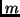
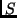
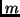
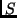
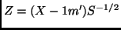
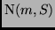
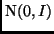
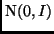
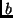
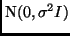

Next: Miscellaneous functions included in
Up: Dimension Reduction Regression in
Previous: Graphical methods
Weights are generally used in dimension reduction methods to make the resulting
weighted sample closer to a normal distribution than the original sample.
Cook (1998, Section 8.4) discusses the method that is implemented here.
When weights are present, they are used in centering the data and computing
the covariance matrix, and they are used in computing the objective matrix
 for phd.
Weights may be provided by the user with the weights
argument. If
weights=NULL, the default, no weighting is used.
The function dr.weights is used to estimate weights using the
algorithm described by Cook (1998, Sec. 8.4). There are several
other arguments that control how the weights are computed, as
described below, and on the help page for the function
dr.weights. The algorithm works as follows:
for phd.
Weights may be provided by the user with the weights
argument. If
weights=NULL, the default, no weighting is used.
The function dr.weights is used to estimate weights using the
algorithm described by Cook (1998, Sec. 8.4). There are several
other arguments that control how the weights are computed, as
described below, and on the help page for the function
dr.weights. The algorithm works as follows:
- For an
 data matrix
data matrix  , find estimates  and 
of the mean and covariance matrix. For this purpose, in the function
cov.rob in the lqs package is used, while in Splus the
function covRob in the robust package is used; in either
case the needed package will be loaded automatically.
If you do not want to use one of these routines, you must rewrite the
function
robust.center.scale to use your preferred code.
In , the method of computing and is determined
by the argument covmethod. If covmethod="classical", the
usual estimator is used for , but is estimated by medians. If
method="mve", the default, or method="mcd", the
covariance matrix is estimated by the minimum volume ellipsoid method
and the minimum determinant method, respectively. These latter two also
return a robust estimate of center. Any tuning parameters for
the method to compute the robust estimate of and
can be passed from the call to dr.
See the documentation for
cov.rob for a description of these additional parameters. All
the defaults are sensible, so most users will not need to use these
additional parameters.
, find estimates  and 
of the mean and covariance matrix. For this purpose, in the function
cov.rob in the lqs package is used, while in Splus the
function covRob in the robust package is used; in either
case the needed package will be loaded automatically.
If you do not want to use one of these routines, you must rewrite the
function
robust.center.scale to use your preferred code.
In , the method of computing and is determined
by the argument covmethod. If covmethod="classical", the
usual estimator is used for , but is estimated by medians. If
method="mve", the default, or method="mcd", the
covariance matrix is estimated by the minimum volume ellipsoid method
and the minimum determinant method, respectively. These latter two also
return a robust estimate of center. Any tuning parameters for
the method to compute the robust estimate of and
can be passed from the call to dr.
See the documentation for
cov.rob for a description of these additional parameters. All
the defaults are sensible, so most users will not need to use these
additional parameters.
- Compute the matrix
. If the data were
normally distributed , the rows of
 would be like a
sample from .
would be like a
sample from .
- Obtain a random vector  from the
 distribution.
The parameter sigma=1 is a tuning parameter that can be set in
the call to dr, and values near 1 or slightly smaller seem
appropriate. Find the row of that is closest to (the code uses
Euclidean distance), and increase a counter for that row by 1.
- The argument nsamples determines the number of times this
last step is repeated; the default is
nsamples=10*dim(x)[1]
where is the data matrix; this number may be too small.
- Return a vector of weights given by the value of the counter
divided by nsamples and multiplied by
 , so the sum of the
weights will be .
, so the sum of the
weights will be .
An example of the use of weights is:
> wts <- dr.weights(LBM~Ht+Wt+RCC+WCC)
> i1 <- dr(LBM~Ht+Wt+RCC+WCC,weights=wts,method="phdres")
Next: Miscellaneous functions included in
Up: Dimension Reduction Regression in
Previous: Graphical methods
Sandy Weisberg
2002-01-10